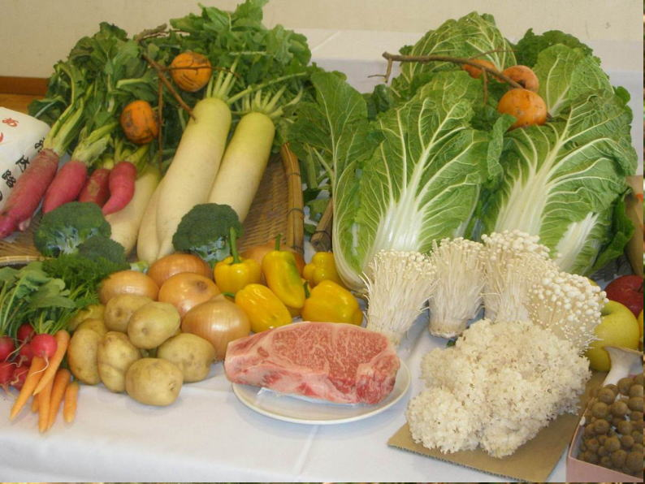

鍼灸、整骨、接骨、美容鍼灸、マッサージ、整体、カイロプラクティック、O脚矯正、不妊、エステでお困りの方はTeaching Beauty鍼灸マッサージ整骨院へ。
電話でのご予約・お問い合わせはTEL.03-6413-7803
〒154-0014 東京都世田谷区新町3-21-1さくらウェルガーデン301号室
花粉症の症状を抑える食べ物pollinosis therapy
なぜ、花粉症になってしまうの？
花粉症はスギやヒノキなどの花粉が原因で鼻水やくしゃみが出るアレルギー疾患。
本来、体には細菌やウィルスなどの異物が侵入してくると、それを排除しようとする
「免疫」機能が備わっているが、その免疫反応が過剰になるためアレルギー症状がおこる。 同じ生活環境で暮らしているのに、花粉症になる人とならない人がいるのは、免疫抑制遺伝子と呼ばれる遺伝子が関与していると言われている。
日頃から鼻や喉の粘膜強化を心がける事が大切。 花粉症は鼻などの粘膜細胞が弱くなり、アレルギー反応を起こしている。 細菌やウイルスなどの異物が真っ先に取り付くのは、口や鼻の粘膜や体内の胃や腸管の表面にある粘膜。シーズンに限らず、1年を通して有害物質などのない空気の中で生活し、食事などでも鼻、喉の気道粘膜を強化することが大切。
欧米型の食事になって、栄養のバランスを崩してしまっていることがアレルギーなどの原因でもあるので、バランスのよい食事をとらないといけない。
アレルギーは肉食中心の人がなりやすく、魚中心の食生活の人はアレルギー反応を起こしにくいとのデータがあります。
どんな食事が粘膜を強化してくれるの？

ビタミンAは、皮膚や粘膜のビタミンとも言われている。
ビタミンB2、B6が豊富に含まれている食材。
粘膜が正常に保つのに働き、体の代謝にも必要。 食物繊維が多く含まれている食材。
粘膜を維持し、抵抗力を高めてくれるビタミンC。 粘膜を強くし、花粉の刺激による炎症を抑える効果がある『ムチン』が含まれている食材。
納豆やオクラ、山芋、モロヘイヤ、なめこ、うなぎなどにも含まれている粘り成分
緑黄色野菜に含まれるカロチノイドは鼻や喉の粘膜を強くして花粉への抵抗力を高めてくれる。
鼻の粘膜強化に良い食材
１、きのこ類
免疫力を高める菌成分βグルカンがたっぷり含まれ、粘膜を強くしてくれる。
２、れんこん
レンコンに含まれるムチンが消化管や気管支、鼻などの粘膜の表面を覆って、酸や細菌などから粘膜を保護してくれる。
３、緑黄色野菜
小松菜、ほうれん草、ブロッコリー、人参など。植物性食品に含まれるカロテンなどのビタミンA。 とくに人参は、皮膚や粘膜を強化するβカロチンが多く含まれ、さまざまな料理で量を摂りやすい。
４、ネバネバ食材
納豆や長芋のねばねば成分ムチンは粘膜を強くしてくれる。
５、レバー
粘液の代謝を円滑にしてくれるビタミンAが多く含まれている。 皮膚や粘膜を正常に保つために働くビタミンB2も多く含まれている。
６、大豆製品
同じくビタミンB2が多く含まれており、不足すると粘膜が炎症を起こしやすくなる。
７、牛乳
牛乳にも粘膜の強化に働くビタミンAが豊富に含まれている。
８、ヨーグルト
ヨーグルトのバリア機能が働き、粘膜を守ってくれる。
９、味噌
味噌を筆頭とする発酵食品は、アレルギー症状を抑える役目があり、味噌は粘膜を強くしてくれる大豆で出来ている。
１０、柑橘類
ビタミンCが体内に侵入した細菌やウイルスの力を弱め、皮膚や粘膜の健康状態を維持し、コラーゲンの合成を促してくれる。
１１、甜茶（てんちゃ）
中国茶の中で植物学上の茶とは異なる木の葉から作られた甘いお茶。 鼻やのどの消炎効果と、アレルギーを抑える効果のふたつがある。
１２、緑茶
粘膜にくっついたウイルスを洗い流す効果が期待できる。 強い抗酸化作用のあるカテキンを含む。
花粉症は鍼灸が効く
西洋医学では抗ヒスタミン薬治療が主体となっている。これは、鼻水が出るから止めてしまいましょう。目が痒いから痒みを抑えましょうというように対処療法でしかなく、根本を断つ根治療法ではありません。
近年では、減感作療法や舌感作療法などを行い始めてきています。
これは、スギ花粉を体内に取り入れ花粉に対する免疫の誤作動を治すというものです。
3年間続けて、30％の人が完治すると言われている程なのです。
また、この療法はスギ花粉のみにしか行う事ができないため他のマツやブタクサなどには使えません。
鍼灸治療は患者様の体質を変える事により花粉症の根治療法ができるのです。
当院では2年間定期的な施術を行った方の72％の方が花粉症が治っております。
それは鍼灸治療のみならず、食生活指導、生活指導も同時に行っているためだと思われます。
出来れば、症状がでる前からの施術をお勧めします。
しかし、症状が出てからでも症状を抑える事ができますので、お困りの方はご相談下さい。
施術にかかる時間
症状により異なりますが、施術時間は下記を目安として下さい。

初診は問診表の記入や初回検査、しっかり丁寧な問診を行いますので多めにかかります。

場合により上記の目安時間より長くかかることもありますので、お時間には余裕を持って
ご予約下さい。
花粉症施術料金
| １回 | \45,000(税別) |
|---|---|
※症状が出る前からの受診をお勧めしますが、症状が出てからでも遅くありません。
動画『1日3分で花粉症を解消する方法』
Ｔｅａｃｈｉｎｇ Ｂｅａｕｔｙ

〒154-0014
東京都世田谷区新町3-21-1
さくらウェルガーデン3F
TEL：
03-6413-7803
→アクセス
診療時間
【通常診療】
月火金土
午前：09:00〜13:00
午後：15:00〜19:00
木曜日
午前：休診
午後：15:00〜19:00
※当日予約可
休診日
水、木(午前)、日、祭日
夜間診療
月火木金土／19:00〜21:00
※通常価格の1.5倍料金
※当日の19時までにご予約の場合のみ
※往診の場合も19時までにご予約下さい
早朝診療
月火木金土／07:00〜09:00
※通常価格の2倍料金
※前日の19時までにご予約の場合のみ
交通事故・労災・
各種保険取扱い